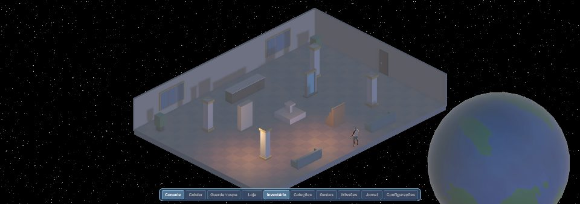
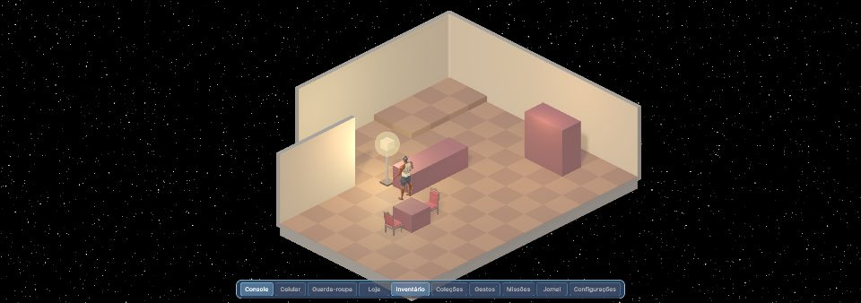
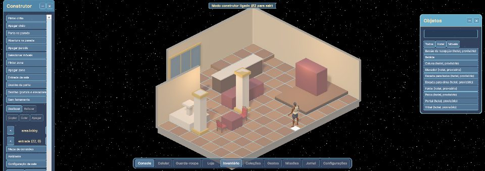
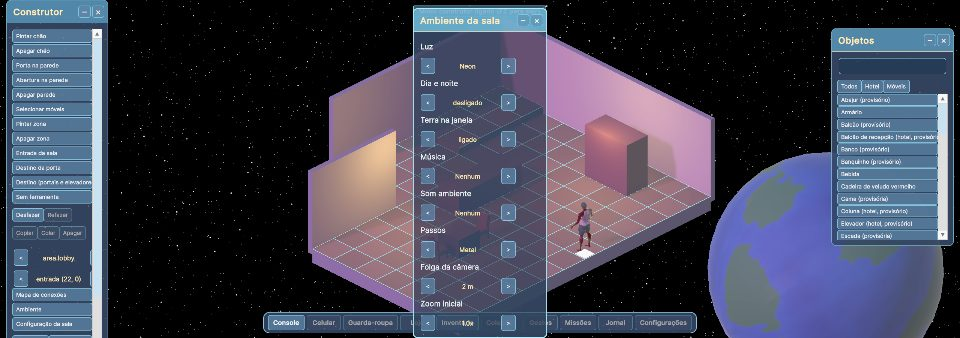

SpaceTopia
Um hotel de luxo em órbita da Terra, para viver, decorar e se divertir com amigos.

O jogo
SpaceTopia é um jogo social para PC, com câmera isométrica e visual 3D estilizado. Ele se passa na Elysium, uma estação espacial que funciona como hotel em órbita da Terra.
Aqui não existe combate. O foco é conviver: conversar, decorar o seu quarto, montar o seu visual, cuidar de um pet e colecionar peças raras.
Em uma frase
Um MMO social, sem combate, sobre morar, decorar e se divertir num hotel flutuando sobre a Terra.
Destaques
O que você vai poder fazer na estação Elysium.
Convivência
Salas públicas cheias de gente, chat em balões, amigos, gestos e danças. Dá para ir de um lugar a outro por portas, portais e pelo Console da estação.
Quartos para decorar
Escolha um modelo de quarto, dê nome e etiquetas, defina quem pode entrar (aberto, senha ou bater na porta) e monte tudo do seu jeito, com móveis em camadas e plataformas.
Moda e personagem
Dois corpos, muitas combinações de rosto, cabelo, pele, cores e roupas. A personalização fica no que importa para se reconhecer de longe.
Pets e colecionáveis
Pets que acompanham você, coleções de móveis em quatro estilos, eventos e itens para completar.
Um hotel de verdade
Lobby, salas temáticas, áreas de lazer e uma estação enorme girando no espaço, com a Terra ao fundo.
Sem pressa e sem combate
Nada de obrigação nem de competição por padrão. Cada pessoa joga no seu ritmo, com seus amigos.
Imagens do jogo
Capturas reais do protótipo em desenvolvimento. As peças e os cenários ainda são provisórios; o visual final virá com a direção de arte.








Andamento
O jogo é feito por uma pessoa, em fases. Cerca de 38% dos itens das fases abaixo já estão prontos ou aguardando teste.
Fichas de design
Antes de construir cada parte, ela vira uma ficha de design, que é aprovada. Já são 28 fichas aprovadas, que guiam a construção do jogo.
ABERTURA
tela de abertura, login, registro e versão
AMBIENTE
dia e noite, clima da sala, Terra e vistas das janelas
AMIGOS
amigos, presença e mensagens privadas
ANIM
animações do avatar
APARENCIA
editor de aparência e criação do personagem
AVATAR
rosto e corpo
CHAT
chat da sala
CONFIG
configurações, acessibilidade e atalhos
CONSTRUTOR
usabilidade do construtor e regras de clique, encaixe e empilhar
CONTA
suporte, exclusão de conta e dados do jogador (teste fechado)
ECONOMIA
Créditos, loja, check-in, missões, conquistas e nível (teste fechado)
EMOTE
gestos, expressões, emojis e reações
GESTAO
Meus quartos, menu do avatar e vizinhos simulados
GR
Grade fina
GUARDA-ROUPA
guarda-roupa e acessórios
HUD-BASICO
barra, janelas e avisos
HUD-CONCEITO
o conceito dos dispositivos e das janelas
INVENTARIO-DECORACAO
inventário e decoração
ITENS-USO
usabilidade e animação dos itens
LOOP-MVP
sessão típica, motivo de voltar e menor jogo do teste fechado
MODERACAO
denúncias, punições e painel (teste fechado)
NAVEGACAO
maquete holográfica, listas de salas e teleporte
ONBOARDING
a primeira experiência
ONLINE
técnica do online para o teste fechado
PERFIL
crachá, passaporte, elogios e badges
QUARTOS
quartos, acesso e papéis
SALA
estrutura, câmera e movimento
VINCULOS
portas, portais, elevadores, escadas, Destino e alas
Inspirações
Se você é autor de alguma imagem e quer que ela saia desta página, avise abrindo um aviso em https://github.com/BrendonStos/spacetopia/issues e ela será removida.